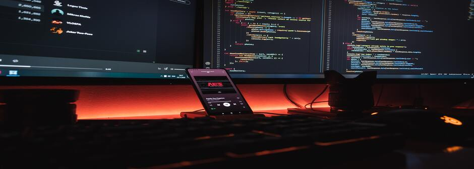

Proyecto 1
USD - Undulatory Behavior
Undulatory Behavior es un graficador hecho mediante códigos, los cuales permiten ver cómo se comportan las ondas generadas por los terremotos, se sabe que existen dos tipos de ondas, estas son las ondas p y las ondas s, el objetivo del programa es mostrar cómo funcionan y como se detectan mediante gráficos hechos con un programa.
o El análisis de etapa a etapa se ha centrado en el desarrollo de los sistemas que construyen USD; las etapas de investigación y creación de software. Como tambien de personas, investigación llevada por el equipo líder en cada una de nuestras comunidades. Creación y divulgación del conocimiento, proceso, unión fisicomatemática del movimiento ondulatorio.
Los pilares del software
-
¿Qué se va a investigar?
El comportamiento de estos fenómenos en el momento de inicio, previo a su llegada a tierra (tsunami), o su epicentro previo a su inicio. El desarrollo de la investigación principalmente es para dar a conocer y entender con facilidad el trabajo que se está realizando por parte del equipo de trabajo, en esta investigación se conocerán datos sobre los sismos y los tsunamis como sus niveles. -
¿Qué trabajo realiza el equipo?
Mejora de sistemas de detección, prevención y formación ciudadana, socialización efectiva a personas externas, desarrollo por medio de innovación de los sistemas actuales, para pujar a la humanidad un mejor futuro, haciendo prioridad la prevención del cuidado al medio ambiente, desecho de residuos, calentamiento global, con el fin:
Al originarse un tsunami este trae consigo desechos marítimos( plástico en el mar), si bien existen múltiples organizaciones mediando esto con el mismo propósito nuestro, USD se enfoca en tomar la problemática desde otro ángulo, de la misma forma con las consecuencias que deja un sismo a la debilitación de las estructuras físicas.